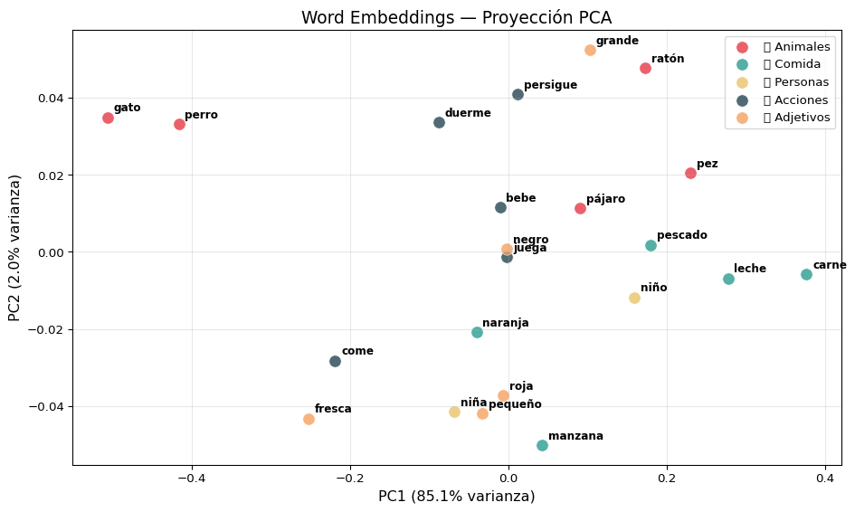
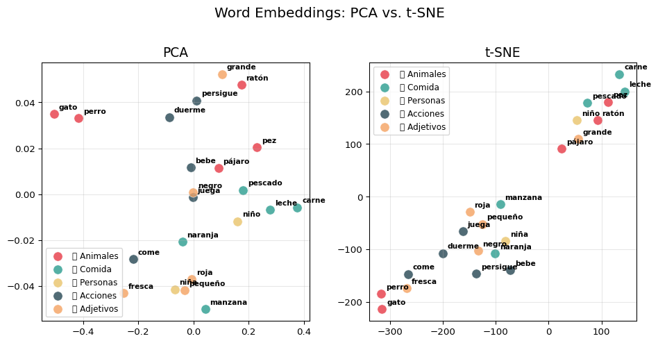
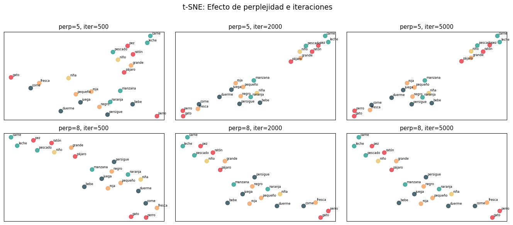
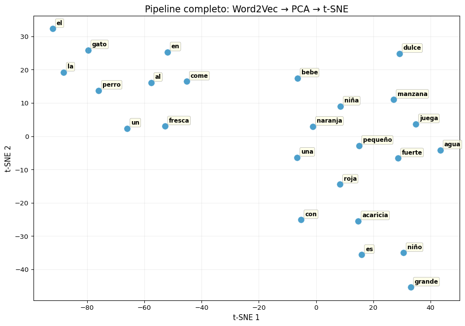

¿Cómo proyectar 300 dimensiones a 2 dimensiones sin perder la estructura importante?
Lo que queremos preservar
Palabras similares deben quedar cerca
Palabras diferentes deben quedar lejos
Clusters de categorías deben ser visibles
Relaciones (analogías) deben ser reconocibles
Lo que inevitablemente perdemos
Información precisa de distancia
Algunas relaciones complejas
Estructura geométrica exacta
La Maldición de la Dimensionalidad
En espacios de alta dimensión, nuestra intuición geométrica falla:
Fenómenos contraintuitivos
Casi todo está “lejos”: en \(\mathbb{R}^{300}\), los puntos aleatorios tienden a estar a distancias similares entre sí
El volumen se concentra en la superficie: la mayoría del volumen de una hiperesfera está cerca de su borde
La similitud coseno es más útil que la distancia euclidiana en alta dimensión
Ejemplo numérico
import numpy as npnp.random.seed(42)# Distancias entre puntos aleatorios en diferentes dimensionesfor d in [2, 10, 100, 300]: puntos = np.random.randn(1000, d) distancias = np.linalg.norm(puntos[0] - puntos[1:], axis=1)print(f"d={d:3d}: media={distancias.mean():.2f}, "f"std={distancias.std():.2f}, "f"ratio={distancias.std()/distancias.mean():.3f}")
A medida que la dimensión crece, la variación relativa de las distancias disminuye → todos los puntos parecen estar “igual de lejos”. Por eso necesitamos técnicas especializadas.
Reducción de Dimensionalidad: Panorama General
Code
flowchart TB subgraph Lineales ["Métodos Lineales"] PCA["PCA<br>Máxima varianza"] SVD["SVD<br>Factorización de matrices"] end subgraph NoLineales ["Métodos No Lineales"] TSNE["t-SNE<br>Estructura local"] UMAP["UMAP<br>Estructura + velocidad"] end HD["Datos en Alta Dimensión<br>ℝ^300"] --> PCA HD --> SVD HD --> TSNE HD --> UMAP PCA --> VIS["Visualización en 2D/3D"] SVD --> VIS TSNE --> VIS UMAP --> VIS
flowchart TB
subgraph Lineales ["Métodos Lineales"]
PCA["PCA<br>Máxima varianza"]
SVD["SVD<br>Factorización de matrices"]
end
subgraph NoLineales ["Métodos No Lineales"]
TSNE["t-SNE<br>Estructura local"]
UMAP["UMAP<br>Estructura + velocidad"]
end
HD["Datos en Alta Dimensión<br>ℝ^300"] --> PCA
HD --> SVD
HD --> TSNE
HD --> UMAP
PCA --> VIS["Visualización en 2D/3D"]
SVD --> VIS
TSNE --> VIS
UMAP --> VIS
Hoy nos enfocaremos en PCA y t-SNE, los dos más utilizados en NLP.
Bloque 2: PCA — Análisis de Componentes Principales
PCA: La Idea Intuitiva
PCA encuentra las direcciones de máxima varianza en los datos y proyecta sobre ellas.
Analogía
Imagina una nube de puntos alargada en 3D (como un cigarro). PCA encuentra:
PC1: el eje largo del cigarro (máxima varianza)
PC2: el segundo eje más largo (perpendicular a PC1)
PC3: el eje más corto (menor varianza)
Si proyectas sobre PC1 y PC2, capturas la mayor parte de la información.
Formalmente
Centrar los datos: \(\tilde{X} = X - \bar{X}\)
Calcular la matriz de covarianza: \(C = \frac{1}{n}\tilde{X}^T\tilde{X}\)
Encontrar los eigenvectores de \(C\)
Los eigenvectores con los eigenvalores más grandes son los componentes principales
Proyectar: \(Z = \tilde{X} W_k\) donde \(W_k\) son los \(k\) eigenvectores principales
from sklearn.decomposition import PCApca = PCA(n_components=2)coords_pca = pca.fit_transform(vectores)fig, ax = plt.subplots(figsize=(10, 7))# Graficar puntos por categoríafor cat, color in color_map.items(): mask = [c == color for c in colores] ax.scatter(coords_pca[mask, 0], coords_pca[mask, 1], c=color, label=cat, s=100, alpha=0.8, edgecolors='white', linewidth=0.5)# Etiquetar cada puntofor i, palabra inenumerate(palabras): ax.annotate(palabra, (coords_pca[i, 0], coords_pca[i, 1]), fontsize=9, fontweight='bold', xytext=(5, 5), textcoords='offset points')ax.set_xlabel(f'PC1 ({pca.explained_variance_ratio_[0]:.1%} varianza)', fontsize=12)ax.set_ylabel(f'PC2 ({pca.explained_variance_ratio_[1]:.1%} varianza)', fontsize=12)ax.set_title('Word Embeddings — Proyección PCA', fontsize=14)ax.legend(fontsize=10, loc='best')ax.grid(True, alpha=0.3)plt.tight_layout()plt.show()

Interpretación
Con un corpus pequeño los clusters no serán perfectos, pero se puede observar cierta agrupación por categoría. Con embeddings pre-entrenados en corpus grandes, la separación es mucho más clara.
Varianza Explicada
Una ventaja de PCA: podemos saber cuánta información preservamos:
perplexity ≈ \(\sqrt{n}\) donde \(n\) es el número de puntos. Para nuestros embeddings con ~30 palabras, perplexity=5-10 funciona bien.
t-SNE Aplicado a Word Embeddings
from sklearn.manifold import TSNE# Usar los mismos vectores que con PCAtsne = TSNE(n_components=2, perplexity=5, random_state=42, max_iter=2000, learning_rate='auto', init='pca')coords_tsne = tsne.fit_transform(vectores)fig, axes = plt.subplots(1, 2, figsize=(16, 6))# PCAax = axes[0]for cat, color in color_map.items(): mask = [c == color for c in colores] ax.scatter(coords_pca[mask, 0], coords_pca[mask, 1], c=color, label=cat, s=100, alpha=0.8, edgecolors='white', linewidth=0.5)for i, palabra inenumerate(palabras): ax.annotate(palabra, (coords_pca[i, 0], coords_pca[i, 1]), fontsize=8, fontweight='bold', xytext=(5, 5), textcoords='offset points')ax.set_title('PCA', fontsize=14)ax.legend(fontsize=9, loc='best')ax.grid(True, alpha=0.3)# t-SNEax = axes[1]for cat, color in color_map.items(): mask = [c == color for c in colores] ax.scatter(coords_tsne[mask, 0], coords_tsne[mask, 1], c=color, label=cat, s=100, alpha=0.8, edgecolors='white', linewidth=0.5)for i, palabra inenumerate(palabras): ax.annotate(palabra, (coords_tsne[i, 0], coords_tsne[i, 1]), fontsize=8, fontweight='bold', xytext=(5, 5), textcoords='offset points')ax.set_title('t-SNE', fontsize=14)ax.legend(fontsize=9, loc='best')ax.grid(True, alpha=0.3)plt.suptitle('Word Embeddings: PCA vs. t-SNE', fontsize=15, y=1.02)plt.tight_layout()plt.show()

Bloque 4: Errores Comunes al Interpretar t-SNE
Cuidado con t-SNE ⚠️
t-SNE produce visualizaciones hermosas, pero hay trampas:
❌ Lo que NO puedes concluir
Las distancias entre clusters no son significativas
Que un cluster esté lejos de otro no dice nada sobre su “distancia real”
El tamaño de los clusters no es significativo
t-SNE puede expandir clusters densos y comprimir clusters dispersos
Es no determinístico
Diferentes ejecuciones dan mapas diferentes (depende de random_state)
✅ Lo que SÍ puedes concluir
La estructura local es confiable
Si dos puntos están juntos, probablemente están cerca en alta dimensión
La existencia de clusters
Si ves clusters separados, probablemente existen
Membresía en clusters
Qué puntos pertenecen a qué cluster es confiable
Regla de oro
t-SNE te dice quién está con quién, pero NO te dice qué tan lejos están los grupos entre sí.
Efecto de Hiperparámetros
Code
fig, axes = plt.subplots(2, 3, figsize=(14, 6))configs = [ (5, 500), (5, 2000), (5, 5000), (8, 500), (8, 2000), (8, 5000),]for ax, (perp, iters) inzip(axes.flat, configs): tsne_test = TSNE(n_components=2, perplexity=perp, random_state=42, max_iter=iters, learning_rate='auto', init='pca') coords = tsne_test.fit_transform(vectores)for cat, color in color_map.items(): mask = [c == color for c in colores] ax.scatter(coords[mask, 0], coords[mask, 1], c=color, s=60, alpha=0.8)for i, palabra inenumerate(palabras): ax.annotate(palabra, (coords[i, 0], coords[i, 1]), fontsize=6, xytext=(3, 3), textcoords='offset points') ax.set_title(f'perp={perp}, iter={iters}', fontsize=11) ax.set_xticks([]) ax.set_yticks([])plt.suptitle('t-SNE: Efecto de perplejidad e iteraciones', fontsize=14, y=1.01)plt.tight_layout()plt.show()

Consejo práctico
Siempre prueba con varios valores de perplejidad y suficientes iteraciones (≥1000). Si dos ejecuciones dan resultados muy diferentes, no confíes demasiado en ninguna.
Bloque 5: PCA vs. t-SNE
Comparación Directa
Aspecto
PCA
t-SNE
Tipo
Lineal
No lineal
Preserva
Varianza global
Vecindades locales
Determinístico
✅ Sí
❌ No (aleatorio)
Velocidad
Muy rápido \(O(nd^2)\)
Lento \(O(n^2)\)
Escalabilidad
✅ Millones de puntos
⚠️ Miles de puntos
Inversa
✅ Puede reconstruir
❌ No tiene inversa
Distancias
Significativas
❌ No significativas entre clusters
Varianza explicada
✅ Cuantificable
❌ No aplica
Hiperparámetros
Ninguno (solo \(k\))
Perplexity, lr, max_iter
Mejor para
Exploración inicial, preproceso
Visualización de clusters
¿Cuándo usar cuál?
PCA primero: para entender cuántas dimensiones “importan” y como preproceso
t-SNE después: para visualizar clusters y vecindades en 2D
Combinación: PCA a 50 dims → t-SNE a 2 dims (¡más rápido y estable!)
Bonus: UMAP
UMAP (Uniform Manifold Approximation and Projection) es una alternativa moderna a t-SNE.
UMAP está reemplazando a t-SNE en muchas aplicaciones. Si trabajas con datasets grandes (>10,000 puntos), UMAP es la mejor opción. Para este curso, t-SNE es suficiente.
Bloque 6: Flujo de Trabajo Completo
Pipeline de Visualización de Embeddings
# Pipeline completo: Entrenar → Seleccionar → Reducir → Visualizarfrom gensim.models import Word2Vecfrom sklearn.decomposition import PCAfrom sklearn.manifold import TSNEfrom sklearn.preprocessing import StandardScaler# 1. Ya tenemos el modelo entrenado (modelo)# 2. Seleccionar palabras de interéspalabras_sel = [w for w in modelo.wv.index_to_keyif modelo.wv.get_vecattr(w, "count") >=1][:25]# 3. Obtener vectoresvecs = np.array([modelo.wv[w] for w in palabras_sel])# 4. Estandarizar (recomendado antes de PCA/t-SNE)scaler = StandardScaler()vecs_std = scaler.fit_transform(vecs)# 5. PCA como preproceso (reducir a 20 dims antes de t-SNE)n_pca =min(20, vecs_std.shape[0] -1, vecs_std.shape[1])pca_pre = PCA(n_components=n_pca)vecs_pca = pca_pre.fit_transform(vecs_std)print(f"PCA: {vecs_std.shape[1]}D → {n_pca}D "f"({sum(pca_pre.explained_variance_ratio_):.1%} varianza)")# 6. t-SNE finaltsne_final = TSNE(n_components=2, perplexity=min(8, len(palabras_sel)//3), random_state=42, max_iter=2000, learning_rate='auto', init='pca')coords_final = tsne_final.fit_transform(vecs_pca)# 7. Visualizarfig, ax = plt.subplots(figsize=(10, 7))ax.scatter(coords_final[:, 0], coords_final[:, 1], c='#0077b6', s=100, alpha=0.7, edgecolors='white', linewidth=0.5)for i, w inenumerate(palabras_sel): ax.annotate(w, (coords_final[i, 0], coords_final[i, 1]), fontsize=9, fontweight='bold', xytext=(6, 6), textcoords='offset points', bbox=dict(boxstyle='round,pad=0.2', facecolor='lightyellow', alpha=0.7, edgecolor='gray', linewidth=0.5))ax.set_title('Pipeline completo: Word2Vec → PCA → t-SNE', fontsize=14)ax.set_xlabel('t-SNE 1', fontsize=11)ax.set_ylabel('t-SNE 2', fontsize=11)ax.grid(True, alpha=0.2)plt.tight_layout()plt.show()
PCA: 50D → 20D (99.2% varianza)

Bloque 7: Resumen y Conexiones
Resumen de la Semana 4
S1: Word2Vec
CBOW y Skip-gram
Negative Sampling
Propiedades (analogías, similitud)
S2: GloVe y FastText
GloVe: co-ocurrencia global
FastText: subpalabras y OOV
Comparación de los tres modelos
S3: Visualización (hoy)
PCA: reducción lineal, varianza explicada
t-SNE: reducción no lineal, clusters locales
Advertencias: no sobreinterpretar distancias entre clusters
Pipeline: estandarizar → PCA → t-SNE
Próxima semana: Redes Neuronales
La Semana 5 marca el inicio de las redes neuronales para NLP: perceptrones, retropropagación y clasificación de texto con MLPs.